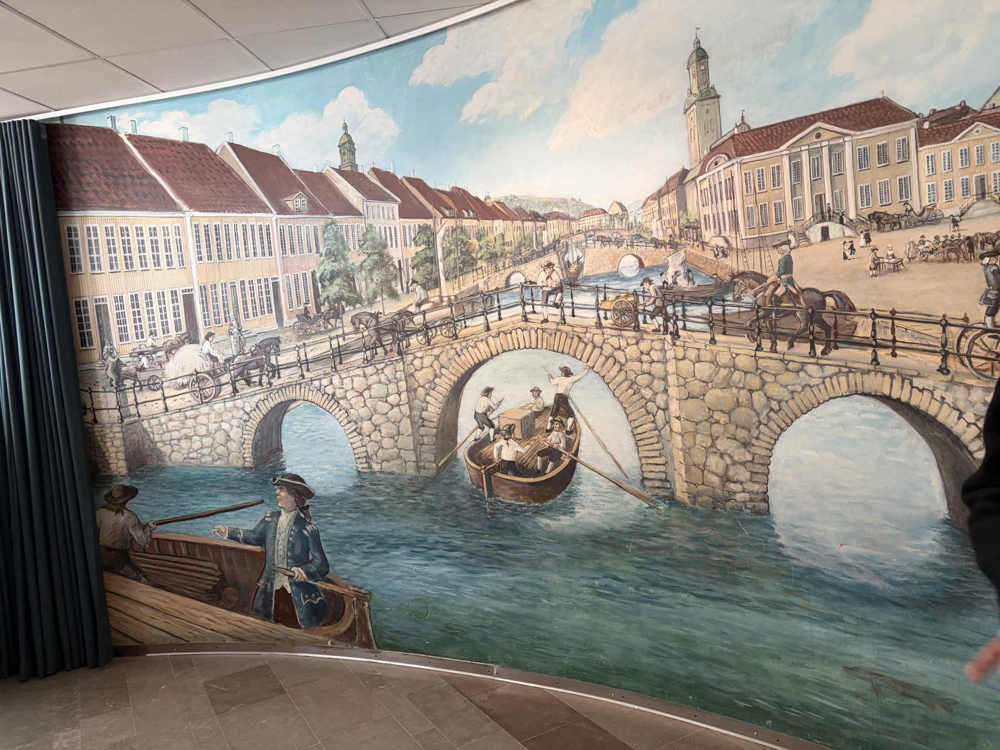

The problem
The elevator bottleneck
The Lipsticks Lookout has limited elevator capacity, which creates a natural gathering point on the ground floor. Today that pause is filled with static murals visitors walk past.
How do we turn idle waiting into a memorable entry point?